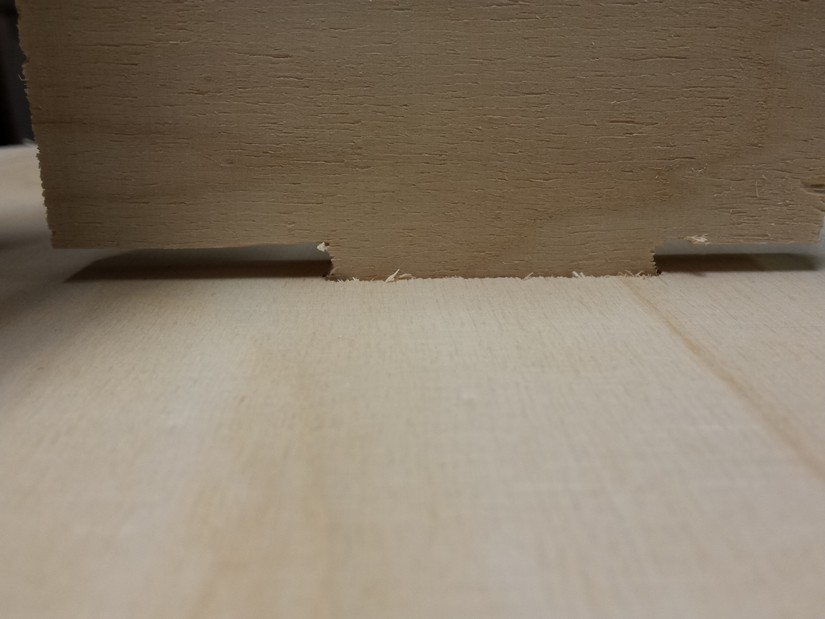
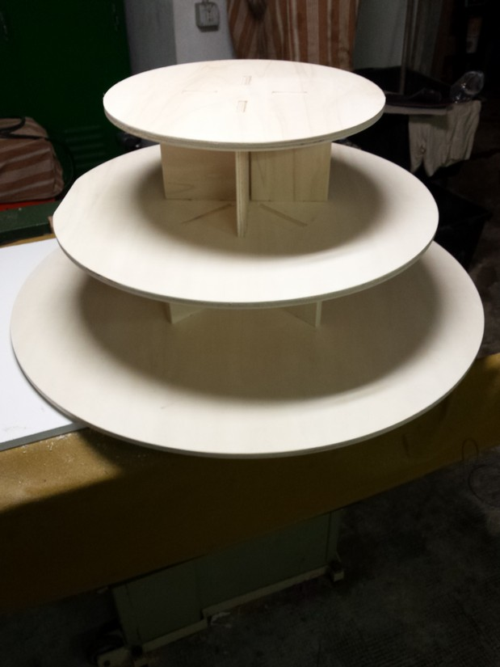

Computer-Controlled Machining
this week assignment is to make something big using the CNC machine and plywood or MDF
At open dot we have a Shopbot with an operating area bout 3x2 meter ( called here "the big fresa")
We also have a panel 12mm thick of plywood
What I'm going to make is a bonbonnières stand for my sister's wedding.
I'm going to make this in press-fit and joint without glue or nails, so it can be mounted and dismounted easily
we make a briefing before using the CNC machine about its usage and the role to a properly use.
we learn about the upcut, downcut, conventional direction of the cut or inverse direction,
the Kerf of the bit, the various type of the bit and the various style of the cut;
we see the operation to change bits and the role to operate safety whit the machine.
An important thing is to fix properly the plywood panel to the sacrificial bed (a MDF panel used as base of the cut area, this is going to be carved during the cut process for make a clean cut through the whole thickness of the panel) of the machine.
We use some wood screw and a electric screwdriver, is important to choose a place where the machine have no cut to perform, although the bit of the CNC will be really damaged if it find the screw in his passage.
I used rhino to draw my model.
during the drawing process I make some attention to the fit border to make a clean joint between the pieces.
considering the fact we use a round bit to perform the cut we have to know that is impossible to make sharp border if we make an inside cut.
to make the all part fit there are 2 ways one is to sandpaper the border of the part to fit to make it rounded (more energy expensive), the other is to make some pocket to permit the bit go deep in the line and make space for the edge of the other pieces.
the strategy is to make a circle near the edge that can be positioned in different ways as the user prefer.
the easiest is to put a semi-circle in the border of the edge.
the one i choose is to make a circle touching the edge whit the perimeter whit a diameter of 6,5mm that is 0,5mm more than bit thickens.
in this way the cut will remove all the material needed to make a perfect fit whit the pieces.
to make the all part fit whit a strong resistance we have to make the pocket a little bit less large of the plywood thickness ( 12mm).
We use v-carve for making the cut pattern and setting the tool used. This program accept PDF, SVG, STL, DXF and other format.
Download rar file of DXF
I choose to export in DXF format from rhino.
Is not important to make a good displacement of the pieces in the cad used to draw because v-carve make all the closed line movable so is easy to place them directly in the work plane.
V-carve have also a utility to make and auto calculation of the best orientation and positioning of the pieces to make the best cut and to waste less material.
you can set the dimension of the workplane, the thickness of the cut, the distance to keep between to pieces and other things.
In the program we have to select what cut to perform inside and what to perform outside, we have to select the tool we used to make the cut (so the program know the shape, the dimension, the speed and other parameter to calculate the pattern), the style of the cut and after we select the order of the cut to perform.
During this step is also possible to put the tabs ( little pieces of uncut wood across the cut to make the catted pieces fixed to the plane so is wont go around and potentially damage or be damaged by the CNC moving); in post processing they can be easily removed by sandpaper or cutter. usually are sufficient 3 tabs for pieces, but it depend on the dimension of the piece; they can be edited in dimension and thickness.
Before start using the machine we have to make the positioning in the start of the workplane and to zero the z axis (for know where the wood is positioned)
The x and y positioning is make "by hand" using the arrow to move the machine on the corner of the plywood panel. for the z axis the machine have a semi-automatic process: we place an aluminium plate under the spindle and on the wood panel, so when the bit touch it make a short-circuit and know there is positioned the panel in the z axis.
Now we can import the pattern we saved before and launch the work using the control panel of the Shopbot,
is better to stay near the CNC to make sure all go in the right way and in case of emergency pause ot stop the process.
During the process I discover that I set a wrong dimension of the wood panel so some pieces comes a little less large, but are not important part and I cut only one another piece.
after the sending process and the assembly all is perfectly fitting and there are also so strong that i can lift the whole structure from the top plane and the structure is holding still and fine.
Here you can find some photos of sending, assembling and final result...
hope my sister will appreciate all the work

